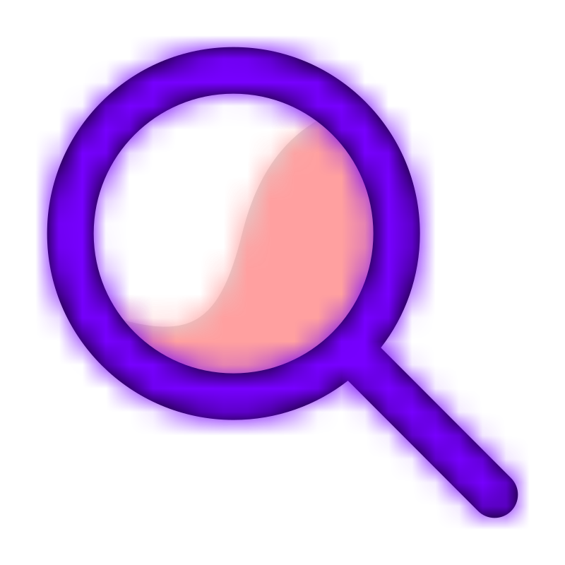
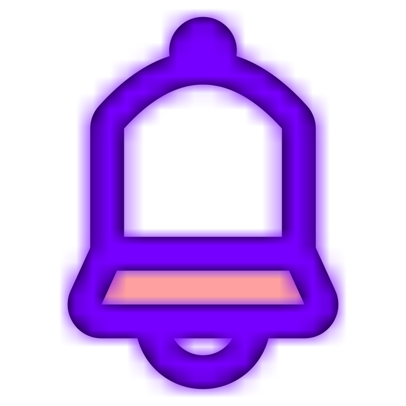

<section class="main-app">
    <sidebar></sidebar>

    <main class="container" [ngClass]="{'contacts-active': isContactsRouteActive()}">

        <div class="input-bar">
            <div class="input">
                
                <contact-filter></contact-filter>
            </div>
            <div class="input-icons">
                <a [routerLink]="['/contact/edit']">
                    
                </a>
                                
            </div>
        </div>

        <router-outlet></router-outlet>

    </main>
</section>